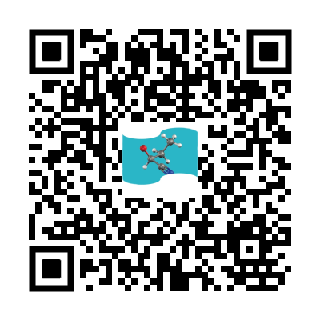

声明
译本电子版依教育赦免原则免费公开
简介
本网页系本人翻译的有机化学（中文版）最新版下载地址。译本最初版本错误很多，自21年8月5日发布以来许多小伙伴提供了帮助，在此对他们表示感谢。目前，译本还在不定期更新中，若有新的问题欢迎与我交流，个人邮箱 lawaxilawaxi@gmail.com，错别字与修改意见 claydenchinese@gmail.com
原著：Organic Chemistry, 2nd. Jonathan Clayden, Nick Greeves, Stuart Warren. 2012. Oxford University Press.
视频
本人作为b站和Youtube up主，以本书部分章节为题材，发布过一些讲解视频，欢迎对有机化学感兴趣的同友指点。Bilibili Youtube
注意：b站上名叫“Delay竞赛-高考化学”的不是我捏，好多人问我我们的关系了，答案就是：不认识。
交友
团购
一家个人打印过多次的淘宝店，和店主争取了团购价格，目前148起。质量真的很好，欢迎大家去支持。建议购买A4上下册稍厚版，个人认为阅读体验最佳。
实时根据最新版本更新~换货可能需要几天，请关注新版更新日期，若时间太近可以过几天购买~

被举报容易下架，您可以在店铺所有宝贝中找到。https://fzfw.taobao.com/
商品图标为旗帜形状和分子模型，与本网站logo一致。
Disclaimer
The copyright of this book belongs to original authors forever: © Jonathan Clayden, Nick Greeves, and Stuart Warren 2012. The translated version is only for learning and will be deleted at any time upon request by original authors.